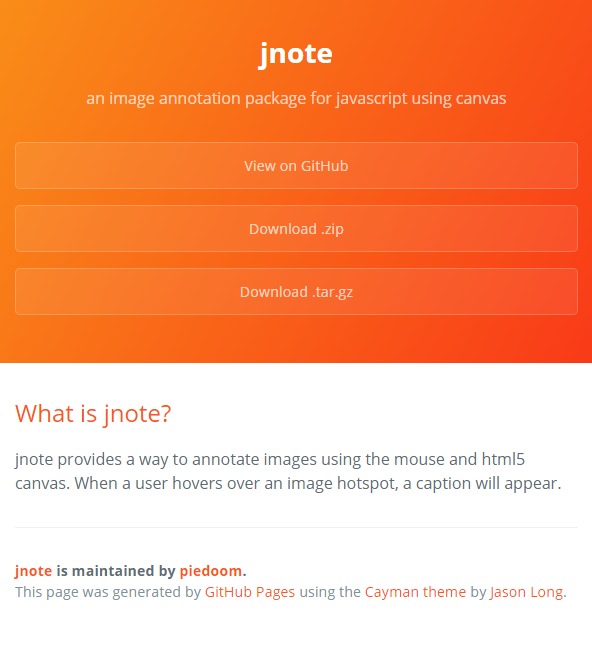

What is jnote?
jnote provides a way to annotate images using the mouse and html5 canvas. When a user hovers over an image hotspot, a caption will appear.
Example
Here is an example of jnote at work. I've copied this site to an image, and will annotate it using jnote!
